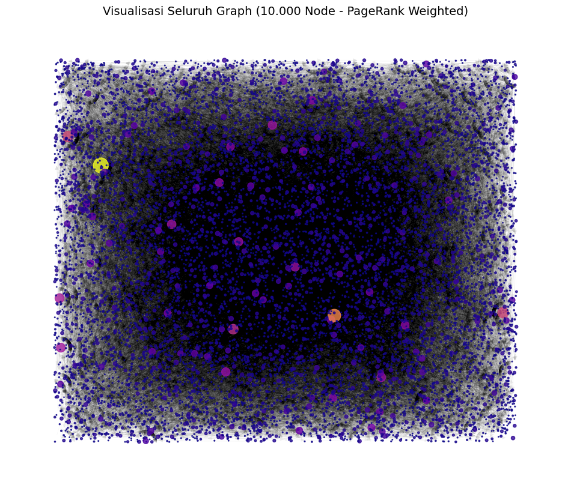
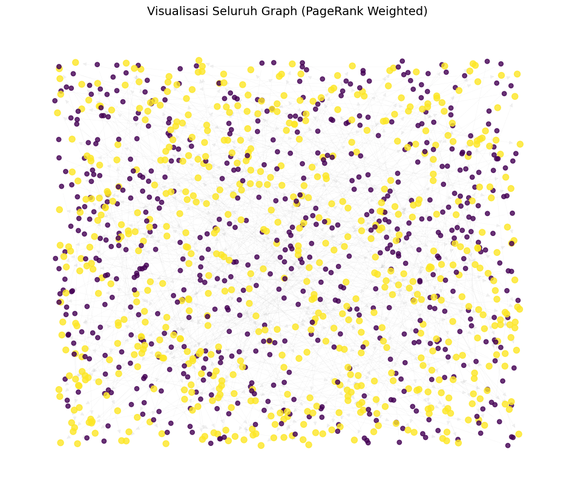
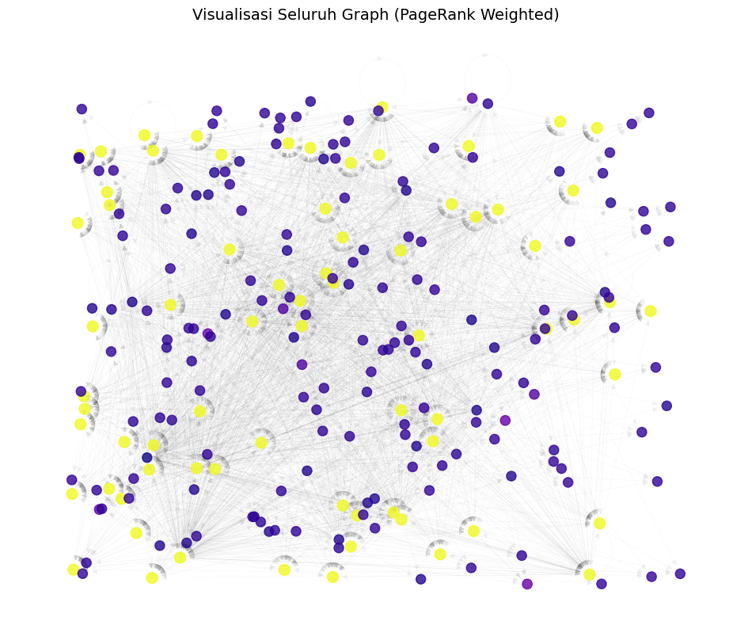

PageRank#
PageRank Data Pak Mul#
import networkx as nx
G = nx.DiGraph()
G.add_edges_from([(0, 1), (0, 2), (1, 2), (2, 0)])
pr = nx.pagerank(G, alpha=0.85)
print(pr)
{0: 0.387789442707259, 1: 0.21481051315058508, 2: 0.3974000441421556}
import numpy as np
def pagerank(adj_matrix, d=0.85, max_iter=100, tol=1e-6):
"""
Hitung PageRank dari matriks adjacency.
Parameters:
adj_matrix : array-like, shape (n, n)
Matriks adjacency (1 jika ada link i -> j)
d : float
Damping factor (default: 0.85)
max_iter : int
Maksimum iterasi
tol : float
Toleransi konvergensi
Returns:
r : ndarray, shape (n,)
Vektor PageRank
"""
adj = np.array(adj_matrix, dtype=float)
n = adj.shape[0]
# Tangani dangling nodes (baris dengan jumlah 0)
out_degree = np.sum(adj, axis=1)
for i in range(n):
if out_degree[i] == 0:
adj[i, :] = 1.0 # taut ke semua halaman
# Normalisasi baris → jadi matriks transisi (baris jumlah = 1)
# TAPI: PageRank asli menggunakan TRANSPOSE → aliran masuk
# Jadi kita transpos untuk membuat kolom = out-link
M = adj / np.sum(adj, axis=1, keepdims=True)
M = M.T # Sekarang M[j,i] = probabilitas dari i ke j
# Inisialisasi
r = np.ones(n) / n
teleport = (1 - d) / n
for _ in range(max_iter):
r_new = d * M @ r + teleport
if np.linalg.norm(r_new - r, 1) < tol:
break
r = r_new
return r
# Contoh penggunaan
if __name__ == "__main__":
# Graf: 0 → 1, 0 → 2, 1 → 2, 2 → 0
A = [
[0, 1, 1], # 0 links to 1 and 2
[0, 0, 1], # 1 links to 2
[1, 0, 0], # 2 links to 0
]
pr = pagerank(A)
print("PageRank:")
for i, score in enumerate(pr):
print(f"Node {i}: {score:.4f}")
PageRank:
Node 0: 0.3878
Node 1: 0.2148
Node 2: 0.3974
PageRank data Pak Mul#
import pandas as pd
import networkx as nx
import matplotlib.pyplot as plt
import networkx as nx
import matplotlib.pyplot as plt # (Opsional, jika ingin menampilkan)
file_name = 'web-Google_10k.txt'
try:
# Langsung membaca file edgelist dari hard drive
# Dataset 'web-Google_10k.txt' biasanya memiliki komentar di awal
# dan nodenya adalah angka (integer)
G = nx.read_edgelist(
file_name,
comments='#', # Abaikan baris yang dimulai dengan '#'
create_using=nx.DiGraph(), # Gunakan DiGraph jika grafiknya berarah
nodetype=int # Baca node sebagai angka
)
print(f"Berhasil membaca file: {file_name}")
print("--- Info Graf ---")
print(f"Jumlah node: {G.number_of_nodes()}")
print(f"Jumlah edge: {G.number_of_edges()}")
# (Opsional) Tampilkan sebagian kecil dari graph
# G_subset = G.subgraph(list(G.nodes())[:50]) # Ambil 50 node pertama
# nx.draw(G_subset, with_labels=True, node_size=50)
# plt.show()
except FileNotFoundError:
print(f"--- ERROR ---")
print(f"File '{file_name}' tidak ditemukan.")
print("Pastikan file tersebut berada di folder yang sama dengan script Python Anda.")
except Exception as e:
print(f"Terjadi error saat membaca file: {e}")
Berhasil membaca file: web-Google_10k.txt
--- Info Graf ---
Jumlah node: 10000
Jumlah edge: 78323
# 1️⃣ Baca file (lewati baris komentar)
edges = pd.read_csv(
"web-Google_10k.txt",
sep="\t",
comment="#",
names=["FromNodeId", "ToNodeId"]
)
print("Jumlah edges:", len(edges))
Jumlah edges: 78323
# 3️⃣ Hitung PageRank
pagerank = nx.pagerank(G, alpha=0.85)
pagerank_df = pd.DataFrame(list(pagerank.items()), columns=["Node", "PageRank"]).sort_values("PageRank", ascending=False)
# 4️⃣ Tampilkan 5 PageRank tertinggi
print("\nTop 5 PageRank tertinggi:")
print(pagerank_df.head(5))
Top 5 PageRank tertinggi:
Node PageRank
994 486980 0.006515
3849 285814 0.004633
113 226374 0.003301
2847 163075 0.003288
5214 555924 0.002756
# 5️⃣ Visualisasi seluruh graph (optimasi agar tidak berat)
plt.figure(figsize=(12, 10))
# Gunakan layout ringan agar cepat
pos = nx.random_layout(G)
# Warna node bisa disesuaikan dengan nilai PageRank
node_colors = [pagerank[n] for n in G.nodes()]
# Ukuran node proporsional dengan nilai PageRank
node_sizes = [v * 50000 for v in pagerank.values()] # skala disesuaikan
# Gambar seluruh node dan edge
nx.draw_networkx_nodes(G, pos, node_size=node_sizes, node_color=node_colors, cmap=plt.cm.plasma, alpha=0.8)
nx.draw_networkx_edges(G, pos, alpha=0.05, width=0.3)
plt.title("Visualisasi Seluruh Graph (10.000 Node - PageRank Weighted)", fontsize=14)
plt.axis("off")
plt.show()

PageRank menggunakan Data berita#
import pandas as pd
import networkx as nx
import matplotlib.pyplot as plt
import pandas as pd
import networkx as nx
import matplotlib.pyplot as plt
file_name = 'preprocessing_crawling_berita.csv'
try:
# 1. Baca file .csv menggunakan Pandas
# Kita gunakan header=None karena dari error sepertinya file Anda tidak punya
# baris header (judul kolom).
# Jika file Anda PUNYA header, hapus saja 'header=None'.
df = pd.read_csv(file_name, header=None)
# 2. Buat graf dari DataFrame Pandas.
# Kita asumsikan kolom pertama (indeks 0) adalah 'source'
# dan kolom kedua (indeks 1) adalah 'target'.
G = nx.from_pandas_edgelist(
df,
source=0, # Gunakan kolom pertama (indeks 0) sebagai source
target=1, # Gunakan kolom kedua (indeks 1) sebagai target
create_using=nx.DiGraph()
)
print(f"Berhasil membaca file: {file_name}")
print("--- Info Graf ---")
print(f"Jumlah node: {G.number_of_nodes()}")
print(f"Jumlah edge: {G.number_of_edges()}")
except FileNotFoundError:
print(f"--- ERROR ---")
print(f"File '{file_name}' tidak ditemukan.")
print("Pastikan file tersebut berada di folder yang sama dengan script Anda.")
except Exception as e:
print(f"Terjadi error saat membaca file: {e}")
Berhasil membaca file: preprocessing_crawling_berita.csv
--- Info Graf ---
Jumlah node: 1251
Jumlah edge: 626
# 1️⃣ Baca file (lewati baris komentar)
edges = pd.read_csv(
"preprocessing_crawling_berita.csv",
sep="\t",
comment="#",
names=["FromNodeId", "ToNodeId"]
)
print("Jumlah edges:", len(edges))
Jumlah edges: 626
# 2️⃣ Buat graph dari edges
G = nx.DiGraph()
G.add_edges_from(edges.values)
print(f"Jumlah node dalam graph: {G.number_of_nodes()}")
print(f"Jumlah edge dalam graph: {G.number_of_edges()}")
Jumlah node dalam graph: 1252
Jumlah edge dalam graph: 626
# 3️⃣ Hitung PageRank
pagerank = nx.pagerank(G, alpha=0.85)
pagerank_df = pd.DataFrame(list(pagerank.items()), columns=["Node", "PageRank"]).sort_values("PageRank", ascending=False)
# 4️⃣ Tampilkan 5 PageRank tertinggi
print("\nTop 5 PageRank tertinggi:")
print(pagerank_df.head(5))
Top 5 PageRank tertinggi:
Node PageRank
1251 NaN 0.001037
1249 NaN 0.001037
1233 NaN 0.001037
1231 NaN 0.001037
1229 NaN 0.001037
# 5️⃣ Visualisasi seluruh graph (optimasi agar tidak berat)
plt.figure(figsize=(12, 10))
# Gunakan layout ringan agar cepat
pos = nx.random_layout(G)
# Warna node bisa disesuaikan dengan nilai PageRank
node_colors = [pagerank[n] for n in G.nodes()]
# Ukuran node proporsional dengan nilai PageRank
node_sizes = [v * 50000 for v in pagerank.values()] # skala disesuaikan
# Gambar seluruh node dan edge
nx.draw_networkx_nodes(
G,
pos,
node_size=node_sizes,
node_color=node_colors,
cmap=plt.cm.viridis, # <-- WARNA DIUBAH DI SINI
alpha=0.8
)
nx.draw_networkx_edges(G, pos, alpha=0.05, width=0.3)
plt.title("Visualisasi Seluruh Graph (PageRank Weighted)", fontsize=14)
plt.axis("off")
plt.show()

PageRank menggunakan link fakultas teknik#
import pandas as pd
import networkx as nx
import matplotlib.pyplot as plt
import pandas as pd # Pastikan Anda sudah mengimpor pandas
# Tentukan nama file yang akan dibaca
file_name = 'semua_link_FT.csv'
try:
# --- 1. Membaca file ---
# Menggantikan 'uploaded = files.upload()'
# Sekarang data Anda tersimpan di variabel 'df' (DataFrame)
df = pd.read_csv(file_name)
print(f"Berhasil membaca file: {file_name}")
# (Opsional) Tampilkan 5 baris pertama untuk_
# print("--- 5 Baris Pertama Data ---")
# print(df.head())
except FileNotFoundError:
print(f"--- ERROR ---")
print(f"File '{file_name}' tidak ditemukan.")
print("Pastikan file tersebut berada di folder yang sama dengan script Python Anda.")
except Exception as e:
print(f"Terjadi error saat membaca file: {e}")
Berhasil membaca file: semua_link_FT.csv
# 1️⃣ Baca file
edges = pd.read_csv(
"semua_link_FT.csv"
)
print("Kolom yang ada:", list(edges.columns))
# Ambil hanya kolom yang dibutuhkan dan ganti nama kolom
edges = edges[['Page', 'Link Keluar']]
edges.columns = ["FromNodeId", "ToNodeId"]
print("Jumlah edges:", len(edges))
Kolom yang ada: ['No', 'Page', 'Link Keluar']
Jumlah edges: 5508
# 2️⃣ Buat graph dari edges
G = nx.DiGraph()
G.add_edges_from(edges.values)
print(f"Jumlah node dalam graph: {G.number_of_nodes()}")
print(f"Jumlah edge dalam graph: {G.number_of_edges()}")
Jumlah node dalam graph: 241
Jumlah edge dalam graph: 2656
# 3️⃣ Hitung PageRank
pagerank = nx.pagerank(G, alpha=0.85)
pagerank_df = pd.DataFrame(list(pagerank.items()), columns=["Node", "PageRank"]).sort_values("PageRank", ascending=False)
# 4️⃣ Tampilkan 5 PageRank tertinggi
print("\nTop 5 PageRank tertinggi:")
print(pagerank_df.head(5))
Top 5 PageRank tertinggi:
Node PageRank
0 https://teknik.trunojoyo.ac.id/ 0.00496
2 https://teknik.trunojoyo.ac.id/about-us/ 0.00496
3 https://teknik.trunojoyo.ac.id/sekilas/ 0.00496
4 https://teknik.trunojoyo.ac.id/about-us/#visi 0.00496
5 https://teknik.trunojoyo.ac.id/about-us/#ciri 0.00496
# 5️⃣ Visualisasi seluruh graph (optimasi agar tidak berat)
plt.figure(figsize=(12, 10))
# Gunakan layout ringan agar cepat
pos = nx.random_layout(G)
# Warna node bisa disesuaikan dengan nilai PageRank
node_colors = [pagerank[n] for n in G.nodes()]
# Ukuran node proporsional dengan nilai PageRank
node_sizes = [v * 20000 for v in pagerank.values()] # skala disesuaikan
# Gambar seluruh node dan edge
nx.draw_networkx_nodes(G, pos, node_size=node_sizes, node_color=node_colors, cmap=plt.cm.plasma, alpha=0.8)
nx.draw_networkx_edges(G, pos, alpha=0.05, width=0.3)
plt.title("Visualisasi Seluruh Graph (PageRank Weighted)", fontsize=14)
plt.axis("off")
plt.show()
